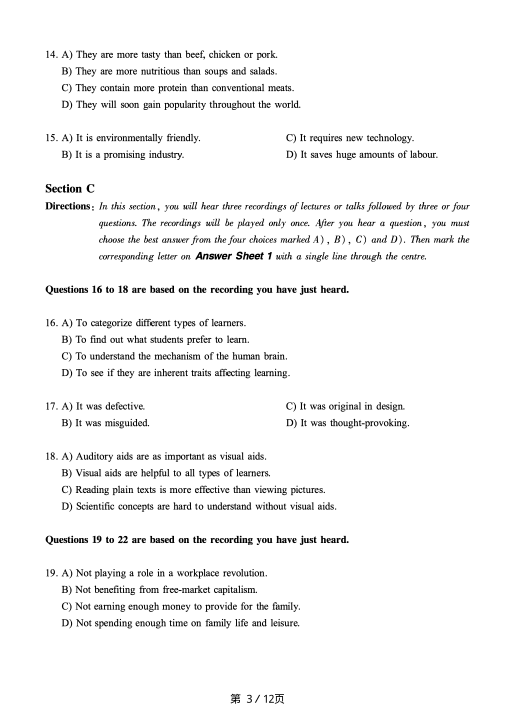
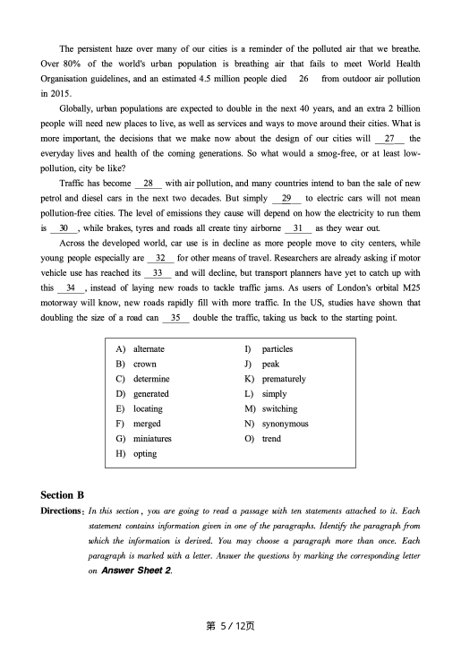

第 1 / 12 页

Part II
Listening Comprehension
(30 minutes)
Section A
Directions : In this section , you will hear two long conversations. At the end of each conversation , you
will hear four questions. Both the conversation and the questions will be spoken only once.
After you hear a question , you must choose the best answer from the four choices marked
A ) , B ) , C) and D ) . Then mark the corresponding letter on Answer Sheet 1 with a
single line through the centre.
Questions 1 to 4 are based on the conversation you have just heard.
1 . A) It focuses exclusively on jazz.
C) It has several branches in London.
B) It sponsors major jazz concerts.
D) It displays albums by new music talents.
2. A) It originated with cowboys.
B) Its market has now shrunk.
C) Its listeners are mostly young people.
D) It remains as widespread as hip hop music.
3. A) Its definition is varied and complicated.
B) It is still going through experimentation.
C) It is frequently accompanied by singing.
D) Its style has remained largely unchanged.
4. A) Learn to play them.
C) Listen to them yourself.
B) Take music lessons.
D) Consult jazz musicians.
Questions 5 to 8 are based on the conversation you have just heard.
5. A) She paid her mortgage.
C) She made a business plan.
B) She called on the man.
D) She went to the bank.
6. A) Her previous debt hadn't been cleared yet.
C) She had apparently asked for too much.
B) Her credit history was considered poor.
D) She didn't pay her mortgage in time.
7. A) Pay a debt long overdue.
C) Start her own business.
B) Buy a piece of property.
D) Check her credit history.
----
2019年12月英语六级考试试题第2套
第 1／12页
查看 / 复制本页文字
Part II Listening Comprehension (30 minutes) Section A Directions : In this section , you will hear two long conversations. At the end of each conversation , you will hear four questions. Both the conversation and the questions will be spoken only once. After you hear a question , you must choose the best answer from the four choices marked A ) , B ) , C) and D ) . Then mark the corresponding letter on Answer Sheet 1 with a single line through the centre. Questions 1 to 4 are based on the conversation you have just heard. 1 . A) It focuses exclusively on jazz. C) It has several branches in London. B) It sponsors major jazz concerts. D) It displays albums by new music talents. 2. A) It originated with cowboys. B) Its market has now shrunk. C) Its listeners are mostly young people. D) It remains as widespread as hip hop music. 3. A) Its definition is varied and complicated. B) It is still going through experimentation. C) It is frequently accompanied by singing. D) Its style has remained largely unchanged. 4. A) Learn to play them. C) Listen to them yourself. B) Take music lessons. D) Consult jazz musicians. Questions 5 to 8 are based on the conversation you have just heard. 5. A) She paid her mortgage. C) She made a business plan. B) She called on the man. D) She went to the bank. 6. A) Her previous debt hadn't been cleared yet. C) She had apparently asked for too much. B) Her credit history was considered poor. D) She didn't pay her mortgage in time. 7. A) Pay a debt long overdue. C) Start her own business. B) Buy a piece of property. D) Check her credit history. ---- 2019年12月英语六级考试试题第2套 第 1／12页
第 2 / 12 页
8. A) Seek advice from an expert about fundraising.
B) Ask for smaller loans from different lenders.
C) Build up her own finances step by step.
D) Revise her business proposal carefully.
Section B
Directions : In this section , you will hear two passages. At the end of each passage , you will hear three
or four questions. Both the passage and the questions will be spoken only once. After you
hear a question , you must choose the best answer from the four choices marked A ) , B ) , C)
and D ) . Then mark the corresponding letter on Answer Sheet 1 with a single line
through the centre.
Questions 9 to 11 are based on the passage you have just heard.
9. A) It is profitable and environmentally friendly.
B) It is well located and completely automated.
C) It is small and unconventional.
D) It is fertile and productive.
10. A) Their urge to make farming more enjoyable.
B) Their desire to improve farming equipment.
C) Their hope to revitalize traditional farming.
D) Their wish to set a new farming standard
1 1 . A) It saves a lot of electricity.
C) It causes hardly any pollution.
B) It needs little maintenance.
D) It loosens soil while weeding.
Questions 12 to 15 are based on the passage you have just heard.
12. A) It has turned certain insects into a new food source.
B) It has started to expand business outside the UK.
C) It has imported some exotic foods from overseas.
D) It has joined hands with Sainsbury's to sell pet insects.
13. A) It was really unforgettable.
C) It hurt his throat slightly.
B) It was a pleasant surprise.
D) It made him feel strange.
第 2／12页
查看 / 复制本页文字
8. A) Seek advice from an expert about fundraising. B) Ask for smaller loans from different lenders. C) Build up her own finances step by step. D) Revise her business proposal carefully. Section B Directions : In this section , you will hear two passages. At the end of each passage , you will hear three or four questions. Both the passage and the questions will be spoken only once. After you hear a question , you must choose the best answer from the four choices marked A ) , B ) , C) and D ) . Then mark the corresponding letter on Answer Sheet 1 with a single line through the centre. Questions 9 to 11 are based on the passage you have just heard. 9. A) It is profitable and environmentally friendly. B) It is well located and completely automated. C) It is small and unconventional. D) It is fertile and productive. 10. A) Their urge to make farming more enjoyable. B) Their desire to improve farming equipment. C) Their hope to revitalize traditional farming. D) Their wish to set a new farming standard 1 1 . A) It saves a lot of electricity. C) It causes hardly any pollution. B) It needs little maintenance. D) It loosens soil while weeding. Questions 12 to 15 are based on the passage you have just heard. 12. A) It has turned certain insects into a new food source. B) It has started to expand business outside the UK. C) It has imported some exotic foods from overseas. D) It has joined hands with Sainsbury's to sell pet insects. 13. A) It was really unforgettable. C) It hurt his throat slightly. B) It was a pleasant surprise. D) It made him feel strange. 第 2／12页
第 3 / 12 页

14. A) They are more tasty than beef, chicken or pork.
B) They are more nutritious than soups and salads.
C) They contain more protein than conventional meats.
D) They will soon gain popularity throughout the world.
15. A) It is environmentally friendly.
C) It requires new technology.
B) It is a promising industry.
D) It saves huge amounts of labour.
Section C
Directions : In this section , you will hear three recordings of lectures or talks followed by three or four
questions. The recordings will be played only once. After you hear a question , you must
choose the best answer from the four choices marked A ) , B ) , C) and D ) . Then mark the
corresponding letter on Answer Sheet 1 with a single line through the centre.
Questions 16 to 18 are based on the recording you have just heard.
16. A) To categorize different types of learners.
B) To find out what students prefer to learn.
C) To understand the mechanism of the human brain.
D) To see if they are inherent traits affecting learning.
17. A) It was defective.
C) It was original in design.
B) It was misguided.
D) It was thought-provoking.
18. A) Auditory aids are as important as visual aids.
B) Visual aids are helpful to all types of learners.
C) Reading plain texts is more effective than viewing pictures.
D) Scientific concepts are hard to understand without visual aids.
Questions 19 to 22 are based on the recording you have just heard.
19. A) Not playing a role in a workplace revolution.
B) Not benefiting from free-market capitalism.
C) Not earning enough money to provide for the family.
D) Not spending enough time on family life and leisure.
第 3／12页
查看 / 复制本页文字
14. A) They are more tasty than beef, chicken or pork. B) They are more nutritious than soups and salads. C) They contain more protein than conventional meats. D) They will soon gain popularity throughout the world. 15. A) It is environmentally friendly. C) It requires new technology. B) It is a promising industry. D) It saves huge amounts of labour. Section C Directions : In this section , you will hear three recordings of lectures or talks followed by three or four questions. The recordings will be played only once. After you hear a question , you must choose the best answer from the four choices marked A ) , B ) , C) and D ) . Then mark the corresponding letter on Answer Sheet 1 with a single line through the centre. Questions 16 to 18 are based on the recording you have just heard. 16. A) To categorize different types of learners. B) To find out what students prefer to learn. C) To understand the mechanism of the human brain. D) To see if they are inherent traits affecting learning. 17. A) It was defective. C) It was original in design. B) It was misguided. D) It was thought-provoking. 18. A) Auditory aids are as important as visual aids. B) Visual aids are helpful to all types of learners. C) Reading plain texts is more effective than viewing pictures. D) Scientific concepts are hard to understand without visual aids. Questions 19 to 22 are based on the recording you have just heard. 19. A) Not playing a role in a workplace revolution. B) Not benefiting from free-market capitalism. C) Not earning enough money to provide for the family. D) Not spending enough time on family life and leisure. 第 3／12页
第 4 / 12 页
20. A) People would be working only fifteen hours a week now.
B) The balance of power in the workplace would change.
C) Technological advances would create many new jobs.
D) Most workers could afford to have house of their own.
21 . A) Loss of workers' personal dignity.
B) Deprivation of workers' creativity.
C) Deterioration of workers' mental health.
D) Unequal distribution of working hours.
Questions 22 to 25 are based on the passage you have just heard.
22. A) It is the worst managed airport in German history.
B) It is now the biggest and busiest airport in Europe.
C) It has become something of a joke among Germans.
D) It has become a typical symbol of German efficiency.
23. A) The city's airports are outdated.
C) The city wanted to boost its economy.
B) The city had just been reunified.
D) The city wanted to attract more tourists.
24. A) The municipal government kept changing hands.
B) The construction finn breached the contract.
C) Shortage of funding delayed its construction.
D) Problems of different kinds kept popping up.
25. A) Tourism industry in Berlin suffers.
C) Huge maintenance costs accumulate.
B) All kinds of equipment gets rusted.
D) Complaints by local residents increase.
Part III
Reading Comprehension
( 40 minutes)
Section A
Directions : In this section , there is a passage with ten blanks. You are required to select one word for
each blank from a list of choices given in a word bank following the passage. Read the
passage through carefully before making your choices. Each choice in the bank is identified
by a letter. Please mark the corresponding letter for each item on Answer Sheet 2 with a
single line through the centre. You may not use any of the words in the bank more than once.
第 4／12页
查看 / 复制本页文字
20. A) People would be working only fifteen hours a week now. B) The balance of power in the workplace would change. C) Technological advances would create many new jobs. D) Most workers could afford to have house of their own. 21 . A) Loss of workers' personal dignity. B) Deprivation of workers' creativity. C) Deterioration of workers' mental health. D) Unequal distribution of working hours. Questions 22 to 25 are based on the passage you have just heard. 22. A) It is the worst managed airport in German history. B) It is now the biggest and busiest airport in Europe. C) It has become something of a joke among Germans. D) It has become a typical symbol of German efficiency. 23. A) The city's airports are outdated. C) The city wanted to boost its economy. B) The city had just been reunified. D) The city wanted to attract more tourists. 24. A) The municipal government kept changing hands. B) The construction finn breached the contract. C) Shortage of funding delayed its construction. D) Problems of different kinds kept popping up. 25. A) Tourism industry in Berlin suffers. C) Huge maintenance costs accumulate. B) All kinds of equipment gets rusted. D) Complaints by local residents increase. Part III Reading Comprehension ( 40 minutes) Section A Directions : In this section , there is a passage with ten blanks. You are required to select one word for each blank from a list of choices given in a word bank following the passage. Read the passage through carefully before making your choices. Each choice in the bank is identified by a letter. Please mark the corresponding letter for each item on Answer Sheet 2 with a single line through the centre. You may not use any of the words in the bank more than once. 第 4／12页
第 5 / 12 页

The persistent haze over many of our cities is a reminder of the polluted air that we breathe.
Over 80% of the world's urban population is breathing air that fails to meet World Health
Organisation guidelines, and an estimated 4.5 million people died
26
from outdoor air pollution
in 2015.
Globally, urban populations are expected to double in the next 40 years, and an extra 2 billion
people will need new places to live, as well as services and ways to move around their cities. What is
more important, the decisions that we make now about the design of our cities will
27
the
everyday lives and health of the corning generations. So what would a smog-free, or at least low
pollution, city be like?
Traffic has become
28
with air pollution, and many countries intend to ban the sale of new
petrol and diesel cars in the next two decades. But simply
29
to electric cars will not mean
pollution-free cities. The level of emissions they cause will depend on how the electricity to run them
is
30
, while brakes, tyres and roads all create tiny airborne
3 1
as they wear out.
Across the developed world, car use is in decline as more people move to city centers, while
young people especially are
32
for other means of travel. Researchers are already asking if motor
vehicle use has reached its
33
and will decline, but transport planners have yet to catch up with
this
34
, instead of laying new roads to tackle traffic jams. As users of London's orbital M25
motorway will know, new roads rapidly fill with more traffic. In the US, studies have shown that
doubling the size of a road can
35
double the traffic, taking us back to the starting point.
A)
alternate
I)
particles
B)
crown
J)
peak
C)
determine
K)
prematurely
D)
generated
L)
simply
E)
locating
M) switching
F)
merged
N)
synonymous
G)
miniatures
0)
trend
H)
opting
Section B
Directions : In this section , you are going to read a passage with ten statements attached to it. Each
statement contains information given in one of the paragraphs. Identify the paragraph from
which the information is derived. You may choose a paragraph more than once. Each
paragraph is marked with a letter. Answer the questions by marking the corresponding letter
on Answer Sheet 2.
第 5／12页
查看 / 复制本页文字
The persistent haze over many of our cities is a reminder of the polluted air that we breathe. Over 80% of the world's urban population is breathing air that fails to meet World Health Organisation guidelines, and an estimated 4.5 million people died 26 from outdoor air pollution in 2015. Globally, urban populations are expected to double in the next 40 years, and an extra 2 billion people will need new places to live, as well as services and ways to move around their cities. What is more important, the decisions that we make now about the design of our cities will 27 the everyday lives and health of the corning generations. So what would a smog-free, or at least low pollution, city be like? Traffic has become 28 with air pollution, and many countries intend to ban the sale of new petrol and diesel cars in the next two decades. But simply 29 to electric cars will not mean pollution-free cities. The level of emissions they cause will depend on how the electricity to run them is 30 , while brakes, tyres and roads all create tiny airborne 3 1 as they wear out. Across the developed world, car use is in decline as more people move to city centers, while young people especially are 32 for other means of travel. Researchers are already asking if motor vehicle use has reached its 33 and will decline, but transport planners have yet to catch up with this 34 , instead of laying new roads to tackle traffic jams. As users of London's orbital M25 motorway will know, new roads rapidly fill with more traffic. In the US, studies have shown that doubling the size of a road can 35 double the traffic, taking us back to the starting point. A) alternate I) particles B) crown J) peak C) determine K) prematurely D) generated L) simply E) locating M) switching F) merged N) synonymous G) miniatures 0) trend H) opting Section B Directions : In this section , you are going to read a passage with ten statements attached to it. Each statement contains information given in one of the paragraphs. Identify the paragraph from which the information is derived. You may choose a paragraph more than once. Each paragraph is marked with a letter. Answer the questions by marking the corresponding letter on Answer Sheet 2. 第 5／12页
第 6 / 12 页
How Much Protein Do You Really Need?
[A] The marketing is tempting: Get stronger muscles and healthier bodies with minimal effort by
adding protein powder to your morning shake or juice drink. Or grab a protein bar at lunch or for
a quick snack. Today, you can find protein supplements everywhere - online or at the pharmacy,
grocery store or health food store. They come in powders, pills and bars. With more than $ 12
billion in sales this year, the industry is booming and, according to the market research company,
Grand View Research, is on track to sell billions more by 2025. But do we really need all this
supplemental protein? It depends. There are pros, cons and some other things to consider.
[B] For starters, protein is critical for every cell in our body. It helps build nails, hair, bones and
muscles. It can also help you feel fuller longer than eating foods without protein. And, unlike
nutrients that are found only in a few foods, protein is present in all foods. " The typical
American diet is a lot higher in protein than a lot of us think," says registered dietitian Angela
Pipitone. " It's in foods many of us expect, such as beef, chicken and other types of meat and
dairy. But it's also in foods that may not come immediately to mind like vegetables, fruit, beans
and grains."
[C] The U.S. government's recommended daily allowance (RDA) for the average adult is 50 to 60
grams of protein a day. This may sound like a lot, but Pipitone says: " We get bits of protein here
and there and that really adds up throughout the day." Take, for example, breakfast. If you eat
two eggs topped with a little bit of cheese and an orange on the side, you already have 22 grams
of protein. Each egg gives you 7 grams, the cheese gives you about 6 grams and the orange -
about 2 grams. Add a lunch of chicken, rice and broccoli ( iEJ ± 1t.) , and you are already over the
recommended 50 grams. " You can get enough protein and meet the RDA before you even get to
dinner," says Pipitone.
[D] So if it's so easy to get your protein in food, why add more in the form of powders, snack bars or
a boost at your local juice bar? No need to, says Pipitone, because, in fact, most of us already get
enough protein in our diet. " Whole foods are always the best option rather than adding
supplements," she says, noting the FDA does not regulate supplements as rigorously as foods or
drugs. So there could be less protein, more sugar and some additives you wouldn't expect, such
as caffeine (wߢlo lzsl ).
[E] If you are considering a supplement, read the list of ingredients, she says, although this is not
always reliable. " I've seen very expensive protein supplements that claim to be high quality but
第 6／12页
查看 / 复制本页文字
How Much Protein Do You Really Need? [A] The marketing is tempting: Get stronger muscles and healthier bodies with minimal effort by adding protein powder to your morning shake or juice drink. Or grab a protein bar at lunch or for a quick snack. Today, you can find protein supplements everywhere - online or at the pharmacy, grocery store or health food store. They come in powders, pills and bars. With more than $ 12 billion in sales this year, the industry is booming and, according to the market research company, Grand View Research, is on track to sell billions more by 2025. But do we really need all this supplemental protein? It depends. There are pros, cons and some other things to consider. [B] For starters, protein is critical for every cell in our body. It helps build nails, hair, bones and muscles. It can also help you feel fuller longer than eating foods without protein. And, unlike nutrients that are found only in a few foods, protein is present in all foods. " The typical American diet is a lot higher in protein than a lot of us think," says registered dietitian Angela Pipitone. " It's in foods many of us expect, such as beef, chicken and other types of meat and dairy. But it's also in foods that may not come immediately to mind like vegetables, fruit, beans and grains." [C] The U.S. government's recommended daily allowance (RDA) for the average adult is 50 to 60 grams of protein a day. This may sound like a lot, but Pipitone says: " We get bits of protein here and there and that really adds up throughout the day." Take, for example, breakfast. If you eat two eggs topped with a little bit of cheese and an orange on the side, you already have 22 grams of protein. Each egg gives you 7 grams, the cheese gives you about 6 grams and the orange - about 2 grams. Add a lunch of chicken, rice and broccoli ( iEJ ± 1t.) , and you are already over the recommended 50 grams. " You can get enough protein and meet the RDA before you even get to dinner," says Pipitone. [D] So if it's so easy to get your protein in food, why add more in the form of powders, snack bars or a boost at your local juice bar? No need to, says Pipitone, because, in fact, most of us already get enough protein in our diet. " Whole foods are always the best option rather than adding supplements," she says, noting the FDA does not regulate supplements as rigorously as foods or drugs. So there could be less protein, more sugar and some additives you wouldn't expect, such as caffeine (wߢlo lzsl ). [E] If you are considering a supplement, read the list of ingredients, she says, although this is not always reliable. " I've seen very expensive protein supplements that claim to be high quality but 第 6／12页
第 7 / 12 页
they might not really be beneficial for the average healthy adult," she says. " It could just be a
waste of money."
[F] But there are certain situations that do warrant extra protein. " Anytime you're repairing or
building muscle," Pipitone says, such as if you're an extreme endurance athlete, training for a
marathon, or you're a body builder. If you're moderately exercising for 150 minutes a week, as
the Centers for Disease Control and Prevention recommends, or less than that, you're probably
not an extreme athlete. Extreme athletes expend lots of energy breaking down and repairing and
building muscles. Protein can give them the edge they need to speed that process.
[G] Vegans can benefit from protein supplements since they do not eat animal-based protein sources
like meat, dairy or eggs. And, for someone always on-the-go who may not have time for a meal,
a protein snack bar can be a good option for occasional meal replacement. Also, individuals
recovering from surgery or an injury can also benefit from extra protein. So, too, can older
people. At around age 60, " muscles really start to break down," says Kathryn Starr, an aging
researcher, " and because of that, the protein needs of an older adult actually increase."
[H] In fact, along with her colleague Connie Bales, Starr recently conducted a small study that found
that adding extra protein foods to the diet of obese older individuals who were trying to lose
weight strengthened their muscles. Participants in the study were separated into two groups -
one group was asked to eat 30 grams of protein per meal in the form of whole foods. That meant
they were eating 90 grams of protein a day. The other group - the control group - was put on
a typical low-calorie diet with about 50 to 60 grams of protein a day. After six months,
researchers found the high protein group had significantly improved their muscle function -
almost twice as much as the control group. " They were able to walk faster, had improved
balance, and were also able to get up out of a chair faster than the control group," Starr says. All
67 participants were over 60 years of age, and both groups lost about the same amount of weight.
[I] Starr is now looking into whether high-protein diets also improve the quality of the muscle itself in
seniors. She's using CT scans to measure muscle size and fat, and comparing seniors on a high
protein diet to those on regular diets. She says her findings should be available in a couple of months.
第 7／12页
查看 / 复制本页文字
they might not really be beneficial for the average healthy adult," she says. " It could just be a waste of money." [F] But there are certain situations that do warrant extra protein. " Anytime you're repairing or building muscle," Pipitone says, such as if you're an extreme endurance athlete, training for a marathon, or you're a body builder. If you're moderately exercising for 150 minutes a week, as the Centers for Disease Control and Prevention recommends, or less than that, you're probably not an extreme athlete. Extreme athletes expend lots of energy breaking down and repairing and building muscles. Protein can give them the edge they need to speed that process. [G] Vegans can benefit from protein supplements since they do not eat animal-based protein sources like meat, dairy or eggs. And, for someone always on-the-go who may not have time for a meal, a protein snack bar can be a good option for occasional meal replacement. Also, individuals recovering from surgery or an injury can also benefit from extra protein. So, too, can older people. At around age 60, " muscles really start to break down," says Kathryn Starr, an aging researcher, " and because of that, the protein needs of an older adult actually increase." [H] In fact, along with her colleague Connie Bales, Starr recently conducted a small study that found that adding extra protein foods to the diet of obese older individuals who were trying to lose weight strengthened their muscles. Participants in the study were separated into two groups - one group was asked to eat 30 grams of protein per meal in the form of whole foods. That meant they were eating 90 grams of protein a day. The other group - the control group - was put on a typical low-calorie diet with about 50 to 60 grams of protein a day. After six months, researchers found the high protein group had significantly improved their muscle function - almost twice as much as the control group. " They were able to walk faster, had improved balance, and were also able to get up out of a chair faster than the control group," Starr says. All 67 participants were over 60 years of age, and both groups lost about the same amount of weight. [I] Starr is now looking into whether high-protein diets also improve the quality of the muscle itself in seniors. She's using CT scans to measure muscle size and fat, and comparing seniors on a high protein diet to those on regular diets. She says her findings should be available in a couple of months. 第 7／12页
第 8 / 12 页
[J] In the meantime, 70-year-old Corliss Keith, who was in the high protein group in Starr's latest
study, says she feels a big difference. " I feel excellent," she says. " I feel like I have a different
body, I have more energy, I'm stronger." She says she is able to take Zumba exercise classes three
times a week, work out on the treadmill (lle,ߣiJt.), and take long, brisk walks. Keith also lost more
than 15 pounds. " I'm a fashionable person, so now I'm back in my 3-inch heels," she says.
[K] As people age, Starr says muscle strength is key to helping them stay strong and continue living
on their own in their own home. " I feel very much alive now," says Keith. " I feel like I could
stay by myself until I'm 100."
[L] But can people overdo protein? Pipitone says you do have to be careful. Other researchers say
too much protein can cause cramps ( J&.:.f- ) , headaches, and fatigue. Dehydration( Jli1]<..) is also a
risk when you eat too much protein. Pipitone says if you increase protein, you also have to
increase your fluid intake. " I always tell people to make sure they're drinking enough fluids,"
which for the average person is 60 to 70 ounces a day, which translates into eight 8-ounce glasses
of water or liquid per day.
[M] There have been some indications that extra protein makes the kidneys work harder, which could
be problematic for individuals with a history of kidney disease and for them, the supplements may
increase the risk of kidney stones, she says.
[N] Bottom line, if you think you need more protein in your diet, consider these questions: Are you
an extreme athlete; are you recovering from injury or surgery; or are you 60 years or older? If so,
adding high protein foods like eggs and meat products to your diet can be beneficial. And, if
you're not sure, it is always a good idea to check with your primary care provider.
36. It is quite easy for one to take in the recommended amount of protein.
37. Pipitone claims that healthy adults need not spend money on protein supplements.
38. The protein supplement business is found to be thriving.
39. Protein can speed the repairing of damaged muscles.
40. Protein supplements may overburden some internal organ, thus leading to its malfunctioning.
41 . Older adults need to take in more protein to keep their muscles strong.
第 8／12页
查看 / 复制本页文字
[J] In the meantime, 70-year-old Corliss Keith, who was in the high protein group in Starr's latest study, says she feels a big difference. " I feel excellent," she says. " I feel like I have a different body, I have more energy, I'm stronger." She says she is able to take Zumba exercise classes three times a week, work out on the treadmill (lle,ߣiJt.), and take long, brisk walks. Keith also lost more than 15 pounds. " I'm a fashionable person, so now I'm back in my 3-inch heels," she says. [K] As people age, Starr says muscle strength is key to helping them stay strong and continue living on their own in their own home. " I feel very much alive now," says Keith. " I feel like I could stay by myself until I'm 100." [L] But can people overdo protein? Pipitone says you do have to be careful. Other researchers say too much protein can cause cramps ( J&.:.f- ) , headaches, and fatigue. Dehydration( Jli1]<..) is also a risk when you eat too much protein. Pipitone says if you increase protein, you also have to increase your fluid intake. " I always tell people to make sure they're drinking enough fluids," which for the average person is 60 to 70 ounces a day, which translates into eight 8-ounce glasses of water or liquid per day. [M] There have been some indications that extra protein makes the kidneys work harder, which could be problematic for individuals with a history of kidney disease and for them, the supplements may increase the risk of kidney stones, she says. [N] Bottom line, if you think you need more protein in your diet, consider these questions: Are you an extreme athlete; are you recovering from injury or surgery; or are you 60 years or older? If so, adding high protein foods like eggs and meat products to your diet can be beneficial. And, if you're not sure, it is always a good idea to check with your primary care provider. 36. It is quite easy for one to take in the recommended amount of protein. 37. Pipitone claims that healthy adults need not spend money on protein supplements. 38. The protein supplement business is found to be thriving. 39. Protein can speed the repairing of damaged muscles. 40. Protein supplements may overburden some internal organ, thus leading to its malfunctioning. 41 . Older adults need to take in more protein to keep their muscles strong. 第 8／12页
第 9 / 12 页
42. Protein is found in more foods than people might realize.
43. Additional protein was found to help strengthen the muscles of overweight seniors seeking weight loss.
44. Pipitone believes that whole foods provide the best source of protein.
45. People are advised to drink more liquid when they take in more protein.
Section C
Directions : There are 2 passages in this section. Each passage is followed by some questions or
unfinished statements. For each of them there are four choices marked A ) , B ) , C) and
D) . You should decide on the best choice and mark the corresponding letter on Answer
Sheet 2 with a single line through the centre.
Passage One
Questions 46 to 50 are based on the following passage.
Last year, a child was born at a hospital in the UK with her heart outside her body. Few babies
survive this rare condition, and those who do must endure numerous operations and are likely to have
complex needs. When her mother was interviewed, three weeks after her daughter's birth, she was
asked if she was prepared for what might be a daunting ( 4--A. !1. ߤ ę ) task caring for her. She
answered without hesitation that, as far as she was concerned, this would be a "privilege" .
Rarely has there been a better example of the power of attitude, one of our most powerful
psychological tools. Our attitudes allow us to turn mistakes into opportunities, and loss into the
chance for new beginnings. An attitude is a settled way of thinking, feeling and/or behaving towards
particular objects, people, events or ideologies. We use our attitudes to filter, interpret and react to the
world around us. You weren't born with attitudes; rather they are all learned, and this happens in a
number of ways.
The most powerful influences occur during early childhood and include both what happened to
you directly, and what those around you did and said in your presence. As you acquire a distinctive
identity, your attitudes are further refined by the behavior of those with whom you identify-your
family, those of your gender and culture, and the people you admire, even though you may not know
them personally. Friendships and other important relationships become increasingly important,
particularly during adolescence. About that same time and throughout adulthood, the information you
receive, especially when ideas are repeated in association with goals and achievements you find
attractive, also refines your attitudes.
Many people assume that our attitudes are internally consistent, that is, the way you think and
第 9／12页
查看 / 复制本页文字
42. Protein is found in more foods than people might realize. 43. Additional protein was found to help strengthen the muscles of overweight seniors seeking weight loss. 44. Pipitone believes that whole foods provide the best source of protein. 45. People are advised to drink more liquid when they take in more protein. Section C Directions : There are 2 passages in this section. Each passage is followed by some questions or unfinished statements. For each of them there are four choices marked A ) , B ) , C) and D) . You should decide on the best choice and mark the corresponding letter on Answer Sheet 2 with a single line through the centre. Passage One Questions 46 to 50 are based on the following passage. Last year, a child was born at a hospital in the UK with her heart outside her body. Few babies survive this rare condition, and those who do must endure numerous operations and are likely to have complex needs. When her mother was interviewed, three weeks after her daughter's birth, she was asked if she was prepared for what might be a daunting ( 4--A. !1. ߤ ę ) task caring for her. She answered without hesitation that, as far as she was concerned, this would be a "privilege" . Rarely has there been a better example of the power of attitude, one of our most powerful psychological tools. Our attitudes allow us to turn mistakes into opportunities, and loss into the chance for new beginnings. An attitude is a settled way of thinking, feeling and/or behaving towards particular objects, people, events or ideologies. We use our attitudes to filter, interpret and react to the world around us. You weren't born with attitudes; rather they are all learned, and this happens in a number of ways. The most powerful influences occur during early childhood and include both what happened to you directly, and what those around you did and said in your presence. As you acquire a distinctive identity, your attitudes are further refined by the behavior of those with whom you identify-your family, those of your gender and culture, and the people you admire, even though you may not know them personally. Friendships and other important relationships become increasingly important, particularly during adolescence. About that same time and throughout adulthood, the information you receive, especially when ideas are repeated in association with goals and achievements you find attractive, also refines your attitudes. Many people assume that our attitudes are internally consistent, that is, the way you think and 第 9／12页
第 10 / 12 页
feel about someone or something predicts your behavior towards them. However, many studies have
found that feelings and thoughts don't necessarily predict behavior. In general, your attitudes will be
internally consistent only when the behavior is easy, and when those around you hold similar beliefs.
That's why, for example, many say they believe in the benefits of recycling or exercise, but don't
behave in line with their views, because it takes awareness, effort and courage to go beyond merely
stating that you believe something is a good idea.
One of the most effective ways to change an attitude is to start behaving as if you already feel
and think the way you'd prefer to. Take some time to reflect on your attitudes, to think about what
you believe and why. Is there anything you consider a burden rather than a privilege? If so, start
behaving-right now-as if the latter is the case.
46. What do we learn from the passage about attitude?
A) It shapes our beliefs and ideologies.
B) It improves our psychological wellbeing.
C) It determines how we respond to our immediate environment.
D) It changes the way we think, feel and interact with one another.
47. What can contribute to the refinement of one's attitude, according to the passage?
A) Their idols' behaviors.
C) Their contact with the opposite gender.
B) Their educational level.
D) Their interaction with different cultures.
48. What do many studies find about people's feelings and thoughts?
A) They may not suggest how a person is going to behave.
B) They are in a way consistent with a person's mentality.
C) They may not find expression in interpersonal relations.
D) They are in line with a person's behavior no matter what.
49. How come many people don't do what they believe is good?
A) They can't afford the time.
C) They are hypocritical.
B) They have no idea how to.
D) They lack willpower.
50. What is proposed as a strategy to change attitude?
A) Changing things that require one's immediate attention.
B) Starting to act in a way that embodies one's aspirations.
C) Adjusting one's behavior gradually over a period of time.
D) Considering ways of reducing one's psychological burdens.
第 10／12页
查看 / 复制本页文字
feel about someone or something predicts your behavior towards them. However, many studies have found that feelings and thoughts don't necessarily predict behavior. In general, your attitudes will be internally consistent only when the behavior is easy, and when those around you hold similar beliefs. That's why, for example, many say they believe in the benefits of recycling or exercise, but don't behave in line with their views, because it takes awareness, effort and courage to go beyond merely stating that you believe something is a good idea. One of the most effective ways to change an attitude is to start behaving as if you already feel and think the way you'd prefer to. Take some time to reflect on your attitudes, to think about what you believe and why. Is there anything you consider a burden rather than a privilege? If so, start behaving-right now-as if the latter is the case. 46. What do we learn from the passage about attitude? A) It shapes our beliefs and ideologies. B) It improves our psychological wellbeing. C) It determines how we respond to our immediate environment. D) It changes the way we think, feel and interact with one another. 47. What can contribute to the refinement of one's attitude, according to the passage? A) Their idols' behaviors. C) Their contact with the opposite gender. B) Their educational level. D) Their interaction with different cultures. 48. What do many studies find about people's feelings and thoughts? A) They may not suggest how a person is going to behave. B) They are in a way consistent with a person's mentality. C) They may not find expression in interpersonal relations. D) They are in line with a person's behavior no matter what. 49. How come many people don't do what they believe is good? A) They can't afford the time. C) They are hypocritical. B) They have no idea how to. D) They lack willpower. 50. What is proposed as a strategy to change attitude? A) Changing things that require one's immediate attention. B) Starting to act in a way that embodies one's aspirations. C) Adjusting one's behavior gradually over a period of time. D) Considering ways of reducing one's psychological burdens. 第 10／12页
第 11 / 12 页
Passage Two
Questions 51 to 55 are based on the following passage.
Industrial fishing for krill ( * *F) in the unspoilt waters around Antarctica is threatening the
future of one of the world's last great wildernesses, according to a new report.
The study by Greenpeace analysed the movements of krill fishing vessels in the region and
found they were increasingly operating " in the immediate vicinity of penguin colonies and whale
feeding grounds" . It also highlights incidents of fishing boats being involved in groundings, oil spills
and accidents, which posed a serious threat to the Antarctic ecosystem.
The report, published on Tuesday, comes amid growing concern about the impact of fishing and
climate change on the Antarctic. A global campaign has been launched to create a network of ocean
sanctuaries to protect the seas in the region and Greenpeace is calling for an immediate halt to fishing
in areas being considered for sanctuary status.
Frida Bengtsson from Greenpeace's Protect the Antarctic campaign said: " If the krill industry
wants to show it's a responsible player, then it should be voluntarily getting out of any area which is
being proposed as an ocean sanctuary, and should instead be backing the protection of these huge
tracts of the Antarctic."
A global campaign has been launched to tum a huge tract of Antarctic seas into ocean
sanctuaries, protecting wildlife and banning not just krill fishing, but all fishing. One was created in
the Ross Sea in 2016, another reserve is being proposed in a vast area of the Weddell Sea, and a third
sanctuary is under consideration in the area west of the Antarctic Peninsula-a key krill fishing area.
The Commission for the Conservation of Antarctic Marine Living Resources ( CCAMLR)
manages the seas around Antarctica. It will decide on the Weddell Sea sanctuary proposal at a
conference in Australia in October, although a decision on the peninsula sanctuary is not expected
until later.
Keith Reid, a science manager at CCAMLR, said that the organisation sought " a balance
between protection, conservation and sustainable fishing in the Southern Ocean." He said although
more fishing was taking place nearer penguin colonies it was often happening later in the season
when these colonies were empty.
" The creation of a system of marine protected areas is a key part of ongoing scientific and
policy discussions in CCAMLR," he added. " Our long-term operation in the region depends on a
healthy and thriving Antarctic marine ecosystem, which is why we have always had an open dialogue
with the environmental non-governmental organisations. We strongly intend to continue this dialogue,
including talks with Greenpeace, to discuss improvements based on the latest scientific data. We are
not the ones to decide on the establishment of marine protected areas, but we hope to contribute
positively with our knowledge and experience."
第 11／12页
查看 / 复制本页文字
Passage Two Questions 51 to 55 are based on the following passage. Industrial fishing for krill ( * *F) in the unspoilt waters around Antarctica is threatening the future of one of the world's last great wildernesses, according to a new report. The study by Greenpeace analysed the movements of krill fishing vessels in the region and found they were increasingly operating " in the immediate vicinity of penguin colonies and whale feeding grounds" . It also highlights incidents of fishing boats being involved in groundings, oil spills and accidents, which posed a serious threat to the Antarctic ecosystem. The report, published on Tuesday, comes amid growing concern about the impact of fishing and climate change on the Antarctic. A global campaign has been launched to create a network of ocean sanctuaries to protect the seas in the region and Greenpeace is calling for an immediate halt to fishing in areas being considered for sanctuary status. Frida Bengtsson from Greenpeace's Protect the Antarctic campaign said: " If the krill industry wants to show it's a responsible player, then it should be voluntarily getting out of any area which is being proposed as an ocean sanctuary, and should instead be backing the protection of these huge tracts of the Antarctic." A global campaign has been launched to tum a huge tract of Antarctic seas into ocean sanctuaries, protecting wildlife and banning not just krill fishing, but all fishing. One was created in the Ross Sea in 2016, another reserve is being proposed in a vast area of the Weddell Sea, and a third sanctuary is under consideration in the area west of the Antarctic Peninsula-a key krill fishing area. The Commission for the Conservation of Antarctic Marine Living Resources ( CCAMLR) manages the seas around Antarctica. It will decide on the Weddell Sea sanctuary proposal at a conference in Australia in October, although a decision on the peninsula sanctuary is not expected until later. Keith Reid, a science manager at CCAMLR, said that the organisation sought " a balance between protection, conservation and sustainable fishing in the Southern Ocean." He said although more fishing was taking place nearer penguin colonies it was often happening later in the season when these colonies were empty. " The creation of a system of marine protected areas is a key part of ongoing scientific and policy discussions in CCAMLR," he added. " Our long-term operation in the region depends on a healthy and thriving Antarctic marine ecosystem, which is why we have always had an open dialogue with the environmental non-governmental organisations. We strongly intend to continue this dialogue, including talks with Greenpeace, to discuss improvements based on the latest scientific data. We are not the ones to decide on the establishment of marine protected areas, but we hope to contribute positively with our knowledge and experience." 第 11／12页
第 12 / 12 页
5 1 . What does Greenpeace's study find about krill fishing?
A) It caused a great many penguins and whales to migrate.
B) It was depriving penguins and whales of their habitats.
C) It was carried out too close to the habitats of penguins and whales.
D) It posed an unprecedented threat to the wildlife around Antarctica.
52. For what purpose has a global campaign been launched?
A) To reduce the impact of climate change on Antarctica.
B) To establish conservation areas in the Antarctic region.
C) To regulate krill fishing operations in the Antarctic seas.
D) To publicise the concern about the impact of krill fishing.
53. What is Greenpeace's recommendation to the krill industry?
A) Opting to operate away from the suggested conservation areas.
B) Volunteering to protect the endangered species in the Antarctic.
C) Refraining from krill fishing throughout the breeding season.
D) Showing its sense of responsibility by leading the global campaign.
54. What did CCAMLR aim to do according to its science manager?
A) Raise public awareness of the vulnerability of Antarctic species.
B) Ban all commercial fishing operations in the Southern Ocean.
C) Keep the penguin colonies from all fishing interference.
D) Sustain fishing without damaging the Antarctic ecosystem.
55. How does CCAMLR define its role in the conservation of the Antarctic environment?
A) A coordinator in policy discussions.
C) A provider of the needed expertise.
B) An authority on big data analysis.
D) An initiator of marine sanctuaries.
Part IV
Translation
(30 minutes)
Directions : For this part , you are allowed 30 minutes to translate a passage from Chinese into English.
You should write your answer on Answer Sheet 2.
ffi:tt( plum blossom) 1irns- 9'1 IE--t:k̉ :ttz:. e , ml r 9'1 !Em::ir , B:lf =:: ctƙ1:psߥߦ:l:'1'i-;¥o#ffi
JJiߧ 0
�� st11 ' nWU, ̊ Ņffi:ttśll!Fߨ' ill!w Jxl * {1Jtߩ̋pj: 0 1:1: 9'1 00 ߪ˿Jt 1.-t 9'1 ' ffi:tt߫ fil
w .111B.1 , ̌ ra, rWift , ߬JJw .A. fn śll!xl.t߭tL!il\Ji.mfrrfi O § it W3lt , w � ff .A.-fil llID ȡ߮ m:tt 9'1 ߯ J&߰
O tfim:kikmtȢJB!ffi:tt ' *11AA i's] 1lt ffl rȡJJ!Yittffl O mffim B)[4}
̍ ' iUfF T :3c߲߱*1B̅1tlfb
ffi:tt5E"7 m :tt , ߳1:pߴ,JJ,ffi:tt
11 , nx: et ...t:n s̃ .A.ߵ w F | ¥LI ffi:tt w ff'Jt§'5t#lt
o
第 12／12页
查看 / 复制本页文字
本页源文件的文字编码有异常。原卷显示正常；复制文字需对照原卷核查。
5 1 . What does Greenpeace's study find about krill fishing?
A) It caused a great many penguins and whales to migrate.
B) It was depriving penguins and whales of their habitats.
C) It was carried out too close to the habitats of penguins and whales.
D) It posed an unprecedented threat to the wildlife around Antarctica.
52. For what purpose has a global campaign been launched?
A) To reduce the impact of climate change on Antarctica.
B) To establish conservation areas in the Antarctic region.
C) To regulate krill fishing operations in the Antarctic seas.
D) To publicise the concern about the impact of krill fishing.
53. What is Greenpeace's recommendation to the krill industry?
A) Opting to operate away from the suggested conservation areas.
B) Volunteering to protect the endangered species in the Antarctic.
C) Refraining from krill fishing throughout the breeding season.
D) Showing its sense of responsibility by leading the global campaign.
54. What did CCAMLR aim to do according to its science manager?
A) Raise public awareness of the vulnerability of Antarctic species.
B) Ban all commercial fishing operations in the Southern Ocean.
C) Keep the penguin colonies from all fishing interference.
D) Sustain fishing without damaging the Antarctic ecosystem.
55. How does CCAMLR define its role in the conservation of the Antarctic environment?
A) A coordinator in policy discussions.
C) A provider of the needed expertise.
B) An authority on big data analysis.
D) An initiator of marine sanctuaries.
Part IV
Translation
(30 minutes)
Directions : For this part , you are allowed 30 minutes to translate a passage from Chinese into English.
You should write your answer on Answer Sheet 2.
ffi:tt( plum blossom) 1irns- 9'1 IE--t:k̉ :ttz:. e , ml r 9'1 !Em::ir , B:lf =:: ctƙ1:psߥߦ:l:'1'i-;¥o#ffi
JJiߧ 0
�� st11 ' nWU, ̊ Ņffi:ttśll!Fߨ' ill!w Jxl * {1Jtߩ̋pj: 0 1:1: 9'1 00 ߪ˿Jt 1.-t 9'1 ' ffi:tt߫ fil
w .111B.1 , ̌ ra, rWift , ߬JJw .A. fn śll!xl.t߭tL!il\Ji.mfrrfi O § it W3lt , w � ff .A.-fil llID ȡ߮ m:tt 9'1 ߯ J&߰
O tfim:kikmtȢJB!ffi:tt ' *11AA i's] 1lt ffl rȡJJ!Yittffl O mffim B)[4}
̍ ' iUfF T :3c߲߱*1B̅1tlfb
ffi:tt5E"7 m :tt , ߳1:pߴ,JJ,ffi:tt
11 , nx: et ...t:n s̃ .A.ߵ w F | ¥LI ffi:tt w ff'Jt§'5t#lt
o
第 12／12页